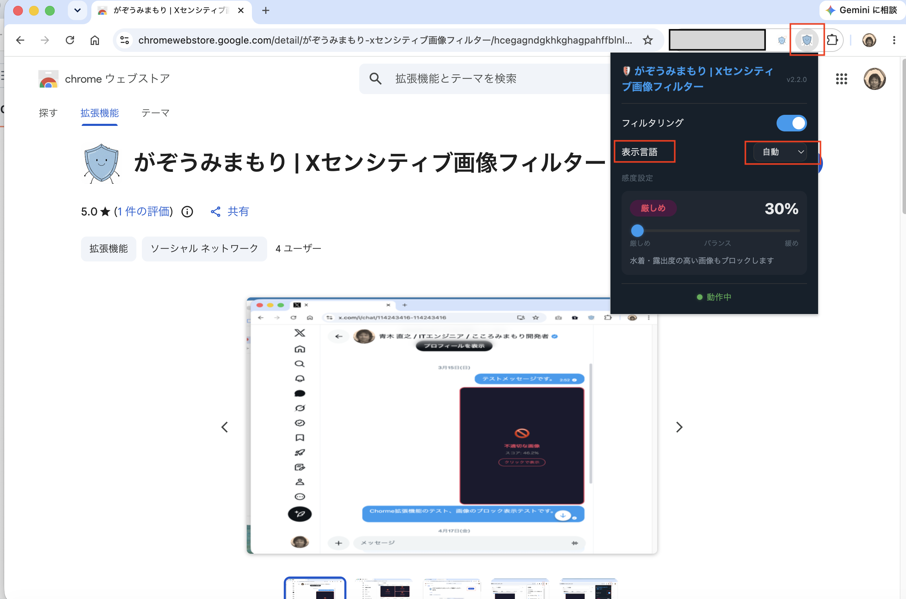
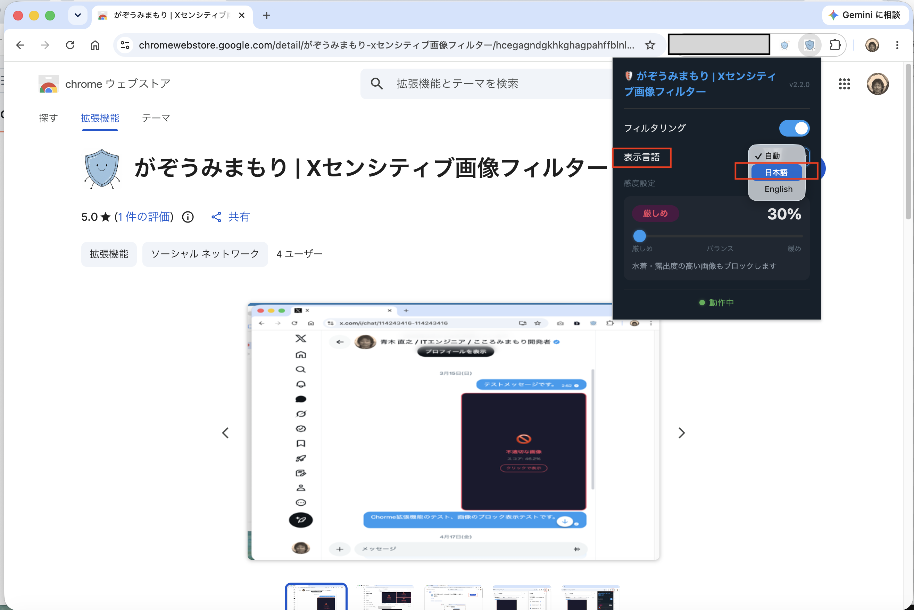
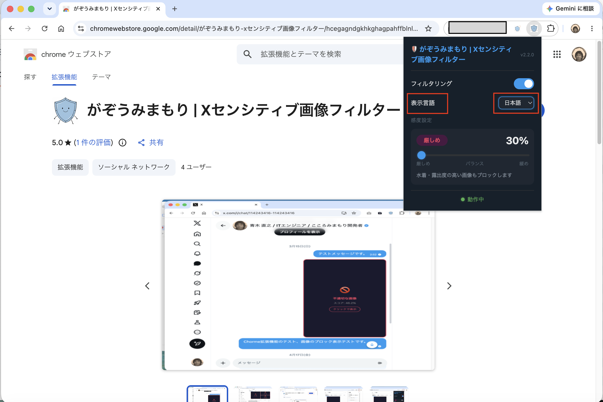
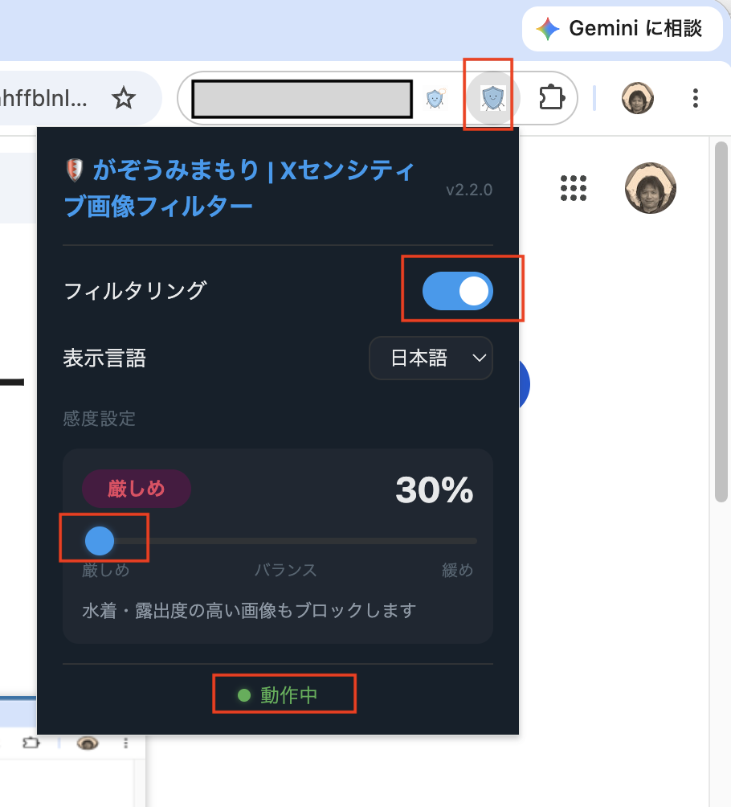
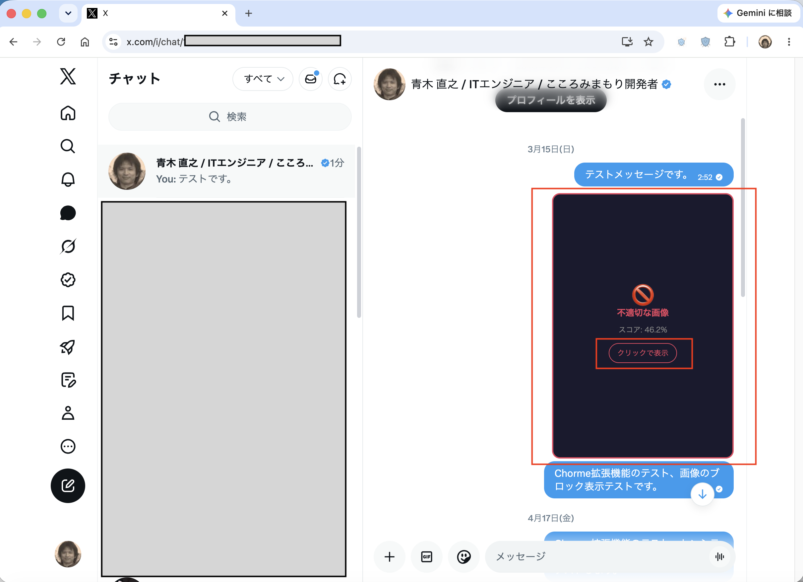
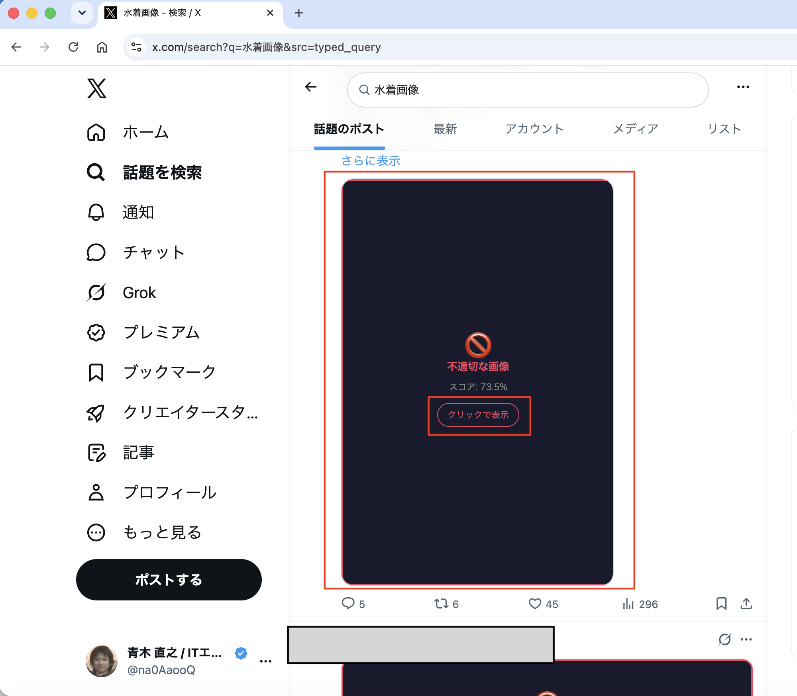

Hướng dẫn sử dụng
📌 Tiện ích mở rộng Google Chrome này không gửi dữ liệu hình ảnh hoặc thông tin cá nhân của bạn đến bất kỳ máy chủ bên ngoài nào. Mọi quá trình xử lý đều được hoàn tất trong trình duyệt bạn đang sử dụng. Bạn có thể sử dụng miễn phí tính năng này.
Mục lục
- 1. Giới thiệu
- 2. Cách cài đặt tiện ích mở rộng Chrome
- 3. Về độ nhạy chặn hình ảnh (ngưỡng)
- 4. Thay đổi độ nhạy bằng thanh trượt
- 5. Ví dụ hình ảnh bị chặn trong tin nhắn trực tiếp X
- 6. Ví dụ hình ảnh bị chặn trên dòng thời gian X
- 7. Cách hiển thị hình ảnh bị chặn
- 8. Liên hệ về tiện ích mở rộng này
1. Giới thiệu
“がぞうみまもり | Xセンシティブ画像フィルター” (sau đây gọi là “tiện ích mở rộng này”) là tiện ích mở rộng Chrome tự động phát hiện và chặn những hình ảnh gây khó chịu hoặc có nội dung nhạy cảm hiển thị trên dòng thời gian và tin nhắn trực tiếp (DM) của X (trước đây là Twitter).
Trang này giải thích loại thông tin mà tiện ích mở rộng này xử lý và cách thông tin đó được xử lý.
Để biết tổng quan về các tính năng của tiện ích mở rộng này, 📖 Tài liệu giới thiệu がぞうみまもり (PDF) vui lòng tham khảo.
Để biết cách tiện ích mở rộng này xử lý thông tin, 📖 trang Chính sách quyền riêng tư.
2. Cách cài đặt tiện ích mở rộng Chrome
Tiện ích mở rộng này đã được Google xem xét. Bạn có thể thêm tiện ích vào Chrome từ Chrome Web Store.
Hãy làm theo các bước dưới đây để thêm tiện ích mở rộng “がぞうみまもり” vào Chrome.
Truy cập trang “がぞうみまもり” trên Chrome Web Store từ Chrome.
Mở trang “がぞうみまもり” trên Chrome Web Store và nhấp vào “Add to Chrome”.

Khi cửa sổ xác nhận xuất hiện, hãy nhấp vào nút “Proceed to install”.
Khi cửa sổ xác nhận xuất hiện, hãy nhấp vào nút “Proceed to install”.

Khi cửa sổ xác nhận xuất hiện, hãy nhấp vào nút “Add extension”.
Khi cửa sổ xác nhận xuất hiện, hãy nhấp vào nút “Add extension”.

Thông báo “がぞうみまもり đã được thêm” sẽ xuất hiện ở phía trên bên phải màn hình.
Ở phía trên bên phải màn hình sẽ hiển thị thông báo “がぞうみまもり | Xセンシティブ画像フィルター đã được thêm vào Chrome”.

Nhấp vào nút ở phía trên bên phải màn hình, sau đó nhấp vào ghim của “がぞうみまもり”.
Nhấp vào nút ở phía trên bên phải màn hình, rồi nhấp vào ghim của “がぞうみまもり” để hiển thị biểu tượng “がぞうみまもり” trên Chrome.

Xác nhận rằng biểu tượng “がぞうみまもり” đã hiển thị trên Chrome.
Xác nhận rằng biểu tượng “がぞうみまもり” đã hiển thị trên Chrome.

3. Về độ nhạy chặn hình ảnh (ngưỡng)
Tiện ích mở rộng này sử dụng AI (mô hình máy học) để tính xác suất một hình ảnh là hình ảnh gây khó chịu hoặc có nội dung nhạy cảm thành điểm số (0–100%). Hình ảnh có điểm số vượt quá ngưỡng đã cài đặt sẽ bị chặn.
Ngay sau khi cài đặt, ngưỡng là 30% (chế độ nghiêm ngặt). Cài đặt này cũng chặn hình ảnh đồ bơi và hình ảnh hở nhiều.
Đây là xác suất hình ảnh gây khó chịu hoặc có nội dung nhạy cảm do AI tính toán. Điểm số càng cao thì khả năng hình ảnh bị chặn càng lớn.
| Chế độ | Ngưỡng tham khảo | Đặc điểm |
|---|---|---|
| Nghiêm ngặt | 0〜40% | Cũng chặn hình ảnh đồ bơi và hình ảnh hở nhiều. Dùng khi bạn muốn chặn nhiều hình ảnh hơn. |
| Cân bằng | 50% (giá trị ban đầu) | Đây là cài đặt tiêu chuẩn. Chặn những hình ảnh rõ ràng gây khó chịu hoặc có nội dung nhạy cảm. |
| Nới lỏng | 60–100% | Chỉ chặn những hình ảnh có độ tin cậy cao. Dùng khi bạn muốn giảm nhận diện nhầm. |
⚠️ Lưu ý: Vì hình ảnh được AI tự động đánh giá, hình ảnh không gây khó chịu hoặc không có nội dung nhạy cảm có thể bị chặn (nhận diện nhầm), hoặc hình ảnh gây khó chịu hay có nội dung nhạy cảm có thể không bị chặn. Hãy điều chỉnh thanh trượt độ nhạy cho phù hợp với nhu cầu của bạn.
4. Thay đổi độ nhạy bằng thanh trượt
Nhấp vào biểu tượng tiện ích mở rộng ở phía trên bên phải trình duyệt để mở bảng cài đặt độ nhạy.
Nhấp vào biểu tượng tiện ích mở rộng
Nhấp vào 🛡️ biểu tượng hình khiên bên cạnh thanh địa chỉ ở phía trên bên phải trình duyệt Chrome. Bạn có thể ghim tiện ích từ biểu tượng câu đố (🧩) để truy cập nhanh.
Kiểm tra nút chuyển “Filtering”
Hãy đảm bảo nút chuyển “Filtering” ở đầu bảng đang ở trạng thái on (màu xanh). Khi tắt, hình ảnh sẽ không bị chặn.
Chọn “Display language”
“Display language” cho phép bạn chuyển đổi ngôn ngữ hiển thị của cửa sổ bật lên và thông báo khi hình ảnh bị chặn. Các lựa chọn là “Auto”, “Japanese” và “English”. Khi chọn “Auto”, tiện ích sử dụng tiếng Nhật nếu cả ngôn ngữ hiển thị của máy tính và Chrome đều là tiếng Nhật; trong các trường hợp khác, tiện ích sử dụng tiếng Anh.
Di chuyển thanh trượt sang trái hoặc phải để cài đặt độ nhạy
Kéo thanh trượt “Sensitivity” sang trái hoặc phải. Càng kéo về bên trái (strict), càng nhiều hình ảnh bị chặn. Càng kéo về bên phải (gentle), hình ảnh càng ít có khả năng bị chặn.
Xác nhận bảng hiển thị “Active”
Nếu phía dưới bảng hiển thị ● Active, cài đặt đang có hiệu lực. Tải lại trang X để áp dụng độ nhạy mới.

▲ Display language đang ở trạng thái “Auto”

▲ Ví dụ chọn “Japanese” từ các lựa chọn Display language

▲ Màn hình cài đặt cửa sổ bật lên bằng tiếng Nhật

▲ Ví dụ hiển thị Filtering và Sensitivity (strict, 30%)
5. Ví dụ hình ảnh bị chặn trong DM của X
Hình ảnh trong tin nhắn trực tiếp (DM) của X bị đánh giá là gây khó chịu hoặc có nội dung nhạy cảm sẽ được thay thế bằng lớp phủ tối như ví dụ dưới đây.

▲ Ví dụ hình ảnh bị chặn trong màn hình DM (điểm số: 46.2%)
💡 Nội dung hiển thị: Trên hình ảnh bị chặn sẽ hiển thị “🚫 Sensitive image” và điểm số do AI tính toán. Điểm số cho biết mức độ hình ảnh vượt quá ngưỡng độ nhạy đã cài đặt.
6. Ví dụ hình ảnh bị chặn trên dòng thời gian X
Những hình ảnh bị đánh giá là gây khó chịu hoặc có nội dung nhạy cảm cũng sẽ bị chặn tương tự trên dòng thời gian và kết quả tìm kiếm của X.

▲ Ví dụ hình ảnh bị chặn trong dòng thời gian (kết quả tìm kiếm) (điểm số: 73.5%)
💡 Khu vực được hỗ trợ: Tiện ích hoạt động trên mọi khu vực hiển thị hình ảnh của X, bao gồm dòng thời gian trang chủ, kết quả tìm kiếm, các tab phương tiện trên hồ sơ và DM.
7. Cách hiển thị hình ảnh bị chặn
Ngay cả khi hình ảnh bị chặn, bạn vẫn có thể chọn hiển thị từng hình ảnh khi cần.
Tìm nút “Click to show”
Một nút như dưới đây sẽ xuất hiện ở giữa lớp phủ trên hình ảnh bị đánh giá là gây khó chịu hoặc có nội dung nhạy cảm.
Nhấp vào nút “Click to show”
Nhấp vào nút sẽ bỏ chặn hình ảnh đó và hiển thị hình ảnh gốc. Các hình ảnh khác không bị ảnh hưởng.
Tải lại trang sẽ áp dụng lại việc chặn
“Click to show” chỉ bỏ chặn tạm thời. Khi tải lại trang, hình ảnh đó sẽ bị chặn lại.
⚠️ Nếu bạn nhận thấy nhận diện nhầm: Nếu một hình ảnh cụ thể liên tục bị chặn nhầm, hãy điều chỉnh thanh trượt độ nhạy về phía “gentle” để hình ảnh ít có khả năng bị chặn hơn. → Cách điều chỉnh thanh trượt (Mục 4)
8. Liên hệ về tiện ích mở rộng này
Nếu bạn có câu hỏi, ý kiến hoặc phản hồi về tiện ích mở rộng này, vui lòng liên hệ theo thông tin trong mục “Liên hệ” trên trang Chính sách quyền riêng tư.
← Xem Chính sách quyền riêng tư← Xem kho lưu trữ GitHub của tiện ích